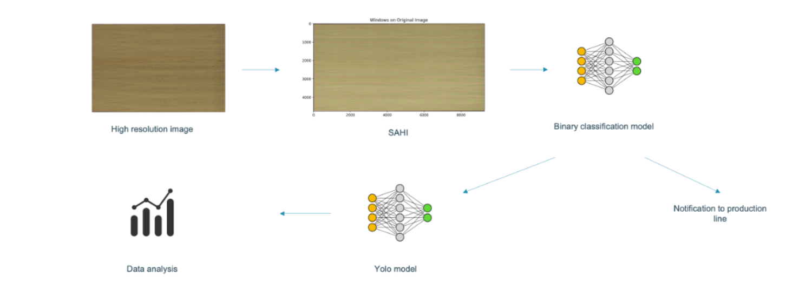

Image Processing and Classification Pipeline#
Introduction#
This notebook presents a comprehensive pipeline for image processing, starting with an image from a line scan camera. It includes the following steps: SAHI for image slicing, preprocessing, binary classification with a pretrained model, and multi-class classification and segmentation using YOLO. The entire pipeline has been tested on an NVIDIA Jetson, ensuring efficient performance for real-time applications.
Performance optimizations are implemented (ex. doing all steps in RAM-memory). Also, the inference times are calculated.

Imports#
from sahi.slicing import slice_image
import torch
from torch.utils.data import DataLoader
from torchvision import datasets, transforms, models
import torch.nn as nn
from torchvision.datasets import ImageFolder
from PIL import Image
from torch.utils.data import Dataset, DataLoader
from ultralytics import YOLO
import time
import numpy as np
from PIL import Image
Line scan camera#
Is simulated by reading an image from disk.
image = Image.open("test_image.jpg").convert('RGB')
SAHI#
slice_image_result = slice_image(
image=image,
output_file_name="output",
output_dir=None,
slice_height=448,
slice_width=448,
overlap_height_ratio=0.2,
overlap_width_ratio=0.2,
)
sahi_images = slice_image_result.sliced_image_list
print(len(slice_image_result.sliced_image_list))
726
Preprocessing#
# Convert the sliced images to numpy arrays
sahi_images_np = [np.array(slice.image) for slice in sahi_images]
# Convert the numpy arrays to PIL images for transformation
sahi_images_pil = [Image.fromarray(img) for img in sahi_images_np]
# Image normalization and transformation
normalize = transforms.Normalize(mean=[0.485, 0.456, 0.406], std=[0.229, 0.224, 0.225])
size = 224
transform = transforms.Compose([
transforms.Resize((size, size)),
transforms.ToTensor(),
normalize,
])
class MemoryDataset(Dataset):
def __init__(self, images, transform=None):
self.images = images
self.transform = transform
def __len__(self):
return len(self.images)
def __getitem__(self, idx):
image = self.images[idx]
if self.transform:
image = self.transform(image)
return image
# Setting up the dataset and DataLoader
dataset = MemoryDataset(sahi_images_pil, transform=transform)
data_loader = DataLoader(dataset, batch_size=32, shuffle=False)
Binary classification#
# Model setup
classes = ('bg', 'faults')
resnet_model = models.resnet50(pretrained=True)
n_inputs = resnet_model.fc.in_features
resnet_model.fc = nn.Linear(n_inputs, len(classes))
device = torch.device("cuda:0" if torch.cuda.is_available() else "cpu")
resnet_model = resnet_model.to(device)
resnet_model.eval()
print(device)
num_runs = 10
total_device_time = 0
total_model_time = 0
total_images = 0
with torch.no_grad():
for _ in range(num_runs):
for images in data_loader:
start_device_time = time.time()
images = images.to(device)
end_device_time = time.time()
start_model_time = time.time()
outputs = resnet_model(images)
end_model_time = time.time()
_, predicted = torch.max(outputs, 1)
predicted_class = [classes[p] for p in predicted]
# Accumulate the times and the number of processed images
total_device_time += (end_device_time - start_device_time)
total_model_time += (end_model_time - start_model_time)
total_images += images.size(0) # Number of images in this batch
# Calculate averages and convert to milliseconds
avg_device_time = (total_device_time / total_images) * 1000
avg_model_time = (total_model_time / total_images) * 1000
print(f"Average time to transfer images to the device: {avg_device_time:.3f} milliseconds per image")
print(f"Average time for model prediction: {avg_model_time:.3f} milliseconds per image")
Multi-class classification#
With yolov8
model_path = "yolo.pt"
model = YOLO(model_path)
device = torch.device("cuda:0")
print(device)
cuda:0
def batch_inference(model, images, batch_size, device):
results = []
num_images = len(images)
# Divide the images into batches
for i in range(0, num_images, batch_size):
batch = images[i:i + batch_size]
batch_results = model.predict(source=batch, device=device)
results.extend(batch_results)
return results
# Perform batch inference
results = batch_inference(model, sahi_images_pil, 16, device)
0: 448x448 (no detections), 1: 448x448 (no detections), 2: 448x448 (no detections), 3: 448x448 (no detections), 4: 448x448 (no detections), 5: 448x448 (no detections), 6: 448x448 1 barst, 7: 448x448 (no detections), 8: 448x448 (no detections), 9: 448x448 (no detections), 10: 448x448 (no detections), 11: 448x448 (no detections), 12: 448x448 (no detections), 13: 448x448 (no detections), 14: 448x448 (no detections), 15: 448x448 (no detections), 72.0ms
Speed: 1.0ms preprocess, 4.5ms inference, 0.4ms postprocess per image at shape (1, 3, 448, 448)
0: 448x448 (no detections), 1: 448x448 (no detections), 2: 448x448 (no detections), 3: 448x448 (no detections), 4: 448x448 (no detections), 5: 448x448 (no detections), 6: 448x448 (no detections), 7: 448x448 (no detections), 8: 448x448 (no detections), 9: 448x448 (no detections), 10: 448x448 (no detections), 11: 448x448 1 zaag, 12: 448x448 (no detections), 13: 448x448 (no detections), 14: 448x448 (no detections), 15: 448x448 (no detections), 82.0ms
Speed: 1.1ms preprocess, 5.1ms inference, 0.4ms postprocess per image at shape (1, 3, 448, 448)
0: 448x448 (no detections), 1: 448x448 (no detections), 2: 448x448 (no detections), 3: 448x448 (no detections), 4: 448x448 (no detections), 5: 448x448 (no detections), 6: 448x448 (no detections), 7: 448x448 (no detections), 8: 448x448 (no detections), 9: 448x448 (no detections), 10: 448x448 (no detections), 11: 448x448 (no detections), 12: 448x448 (no detections), 13: 448x448 (no detections), 14: 448x448 (no detections), 15: 448x448 (no detections), 81.0ms
Speed: 1.2ms preprocess, 5.1ms inference, 0.3ms postprocess per image at shape (1, 3, 448, 448)
0: 448x448 (no detections), 1: 448x448 1 kras, 2: 448x448 (no detections), 3: 448x448 (no detections), 4: 448x448 (no detections), 5: 448x448 (no detections), 6: 448x448 (no detections), 7: 448x448 (no detections), 8: 448x448 (no detections), 9: 448x448 (no detections), 10: 448x448 (no detections), 11: 448x448 (no detections), 12: 448x448 (no detections), 13: 448x448 (no detections), 14: 448x448 (no detections), 15: 448x448 (no detections), 81.0ms
Speed: 1.2ms preprocess, 5.1ms inference, 0.5ms postprocess per image at shape (1, 3, 448, 448)
0: 448x448 (no detections), 1: 448x448 (no detections), 2: 448x448 (no detections), 3: 448x448 (no detections), 4: 448x448 (no detections), 5: 448x448 (no detections), 6: 448x448 (no detections), 7: 448x448 (no detections), 8: 448x448 (no detections), 9: 448x448 (no detections), 10: 448x448 (no detections), 11: 448x448 (no detections), 12: 448x448 (no detections), 13: 448x448 (no detections), 14: 448x448 (no detections), 15: 448x448 (no detections), 82.0ms
Speed: 1.1ms preprocess, 5.1ms inference, 0.4ms postprocess per image at shape (1, 3, 448, 448)
0: 448x448 (no detections), 1: 448x448 (no detections), 2: 448x448 (no detections), 3: 448x448 (no detections), 4: 448x448 (no detections), 5: 448x448 (no detections), 6: 448x448 (no detections), 7: 448x448 (no detections), 8: 448x448 (no detections), 9: 448x448 (no detections), 10: 448x448 (no detections), 11: 448x448 (no detections), 12: 448x448 (no detections), 13: 448x448 (no detections), 14: 448x448 (no detections), 15: 448x448 (no detections), 82.0ms
Speed: 1.1ms preprocess, 5.1ms inference, 0.3ms postprocess per image at shape (1, 3, 448, 448)
0: 448x448 (no detections), 1: 448x448 (no detections), 2: 448x448 (no detections), 3: 448x448 (no detections), 4: 448x448 (no detections), 5: 448x448 (no detections), 6: 448x448 (no detections), 7: 448x448 (no detections), 8: 448x448 (no detections), 9: 448x448 (no detections), 10: 448x448 (no detections), 11: 448x448 (no detections), 12: 448x448 (no detections), 13: 448x448 (no detections), 14: 448x448 (no detections), 15: 448x448 (no detections), 81.0ms
Speed: 1.1ms preprocess, 5.1ms inference, 0.5ms postprocess per image at shape (1, 3, 448, 448)
0: 448x448 (no detections), 1: 448x448 (no detections), 2: 448x448 (no detections), 3: 448x448 (no detections), 4: 448x448 (no detections), 5: 448x448 (no detections), 6: 448x448 (no detections), 7: 448x448 (no detections), 8: 448x448 (no detections), 9: 448x448 (no detections), 10: 448x448 (no detections), 11: 448x448 (no detections), 12: 448x448 (no detections), 13: 448x448 (no detections), 14: 448x448 (no detections), 15: 448x448 (no detections), 82.0ms
Speed: 1.1ms preprocess, 5.1ms inference, 0.4ms postprocess per image at shape (1, 3, 448, 448)
0: 448x448 (no detections), 1: 448x448 (no detections), 2: 448x448 (no detections), 3: 448x448 (no detections), 4: 448x448 (no detections), 5: 448x448 (no detections), 6: 448x448 (no detections), 7: 448x448 (no detections), 8: 448x448 (no detections), 9: 448x448 (no detections), 10: 448x448 (no detections), 11: 448x448 (no detections), 12: 448x448 (no detections), 13: 448x448 (no detections), 14: 448x448 (no detections), 15: 448x448 (no detections), 82.0ms
Speed: 1.1ms preprocess, 5.1ms inference, 0.3ms postprocess per image at shape (1, 3, 448, 448)
0: 448x448 (no detections), 1: 448x448 (no detections), 2: 448x448 (no detections), 3: 448x448 (no detections), 4: 448x448 (no detections), 5: 448x448 (no detections), 6: 448x448 (no detections), 7: 448x448 (no detections), 8: 448x448 (no detections), 9: 448x448 (no detections), 10: 448x448 (no detections), 11: 448x448 (no detections), 12: 448x448 (no detections), 13: 448x448 (no detections), 14: 448x448 (no detections), 15: 448x448 (no detections), 78.0ms
Speed: 1.1ms preprocess, 4.9ms inference, 0.4ms postprocess per image at shape (1, 3, 448, 448)
0: 448x448 (no detections), 1: 448x448 (no detections), 2: 448x448 (no detections), 3: 448x448 (no detections), 4: 448x448 (no detections), 5: 448x448 (no detections), 6: 448x448 (no detections), 7: 448x448 (no detections), 8: 448x448 (no detections), 9: 448x448 (no detections), 10: 448x448 (no detections), 11: 448x448 (no detections), 12: 448x448 (no detections), 13: 448x448 (no detections), 14: 448x448 (no detections), 15: 448x448 (no detections), 82.0ms
Speed: 1.1ms preprocess, 5.1ms inference, 0.5ms postprocess per image at shape (1, 3, 448, 448)
0: 448x448 (no detections), 1: 448x448 (no detections), 2: 448x448 (no detections), 3: 448x448 (no detections), 4: 448x448 (no detections), 5: 448x448 (no detections), 6: 448x448 (no detections), 7: 448x448 (no detections), 8: 448x448 (no detections), 9: 448x448 1 zaag, 10: 448x448 (no detections), 11: 448x448 (no detections), 12: 448x448 (no detections), 13: 448x448 (no detections), 14: 448x448 (no detections), 15: 448x448 (no detections), 82.0ms
Speed: 1.1ms preprocess, 5.1ms inference, 0.4ms postprocess per image at shape (1, 3, 448, 448)
0: 448x448 (no detections), 1: 448x448 (no detections), 2: 448x448 (no detections), 3: 448x448 (no detections), 4: 448x448 (no detections), 5: 448x448 (no detections), 6: 448x448 (no detections), 7: 448x448 (no detections), 8: 448x448 (no detections), 9: 448x448 (no detections), 10: 448x448 (no detections), 11: 448x448 (no detections), 12: 448x448 (no detections), 13: 448x448 (no detections), 14: 448x448 (no detections), 15: 448x448 (no detections), 82.0ms
Speed: 1.1ms preprocess, 5.1ms inference, 0.3ms postprocess per image at shape (1, 3, 448, 448)
0: 448x448 (no detections), 1: 448x448 (no detections), 2: 448x448 (no detections), 3: 448x448 (no detections), 4: 448x448 (no detections), 5: 448x448 (no detections), 6: 448x448 (no detections), 7: 448x448 (no detections), 8: 448x448 (no detections), 9: 448x448 (no detections), 10: 448x448 (no detections), 11: 448x448 (no detections), 12: 448x448 (no detections), 13: 448x448 (no detections), 14: 448x448 (no detections), 15: 448x448 (no detections), 79.0ms
Speed: 1.2ms preprocess, 4.9ms inference, 0.4ms postprocess per image at shape (1, 3, 448, 448)
0: 448x448 (no detections), 1: 448x448 (no detections), 2: 448x448 (no detections), 3: 448x448 (no detections), 4: 448x448 (no detections), 5: 448x448 (no detections), 6: 448x448 (no detections), 7: 448x448 1 zaag, 8: 448x448 (no detections), 9: 448x448 (no detections), 10: 448x448 (no detections), 11: 448x448 (no detections), 12: 448x448 (no detections), 13: 448x448 (no detections), 14: 448x448 (no detections), 15: 448x448 (no detections), 82.0ms
Speed: 1.1ms preprocess, 5.1ms inference, 0.6ms postprocess per image at shape (1, 3, 448, 448)
0: 448x448 (no detections), 1: 448x448 (no detections), 2: 448x448 (no detections), 3: 448x448 (no detections), 4: 448x448 (no detections), 5: 448x448 (no detections), 6: 448x448 (no detections), 7: 448x448 (no detections), 8: 448x448 (no detections), 9: 448x448 (no detections), 10: 448x448 (no detections), 11: 448x448 (no detections), 12: 448x448 (no detections), 13: 448x448 (no detections), 14: 448x448 (no detections), 15: 448x448 (no detections), 82.0ms
Speed: 1.1ms preprocess, 5.1ms inference, 0.4ms postprocess per image at shape (1, 3, 448, 448)
0: 448x448 (no detections), 1: 448x448 (no detections), 2: 448x448 (no detections), 3: 448x448 (no detections), 4: 448x448 (no detections), 5: 448x448 (no detections), 6: 448x448 (no detections), 7: 448x448 (no detections), 8: 448x448 1 zaag, 9: 448x448 (no detections), 10: 448x448 (no detections), 11: 448x448 (no detections), 12: 448x448 (no detections), 13: 448x448 (no detections), 14: 448x448 (no detections), 15: 448x448 (no detections), 82.0ms
Speed: 1.1ms preprocess, 5.1ms inference, 0.4ms postprocess per image at shape (1, 3, 448, 448)
0: 448x448 (no detections), 1: 448x448 (no detections), 2: 448x448 (no detections), 3: 448x448 (no detections), 4: 448x448 (no detections), 5: 448x448 (no detections), 6: 448x448 (no detections), 7: 448x448 (no detections), 8: 448x448 (no detections), 9: 448x448 (no detections), 10: 448x448 (no detections), 11: 448x448 (no detections), 12: 448x448 (no detections), 13: 448x448 (no detections), 14: 448x448 (no detections), 15: 448x448 (no detections), 82.0ms
Speed: 1.1ms preprocess, 5.1ms inference, 0.3ms postprocess per image at shape (1, 3, 448, 448)
0: 448x448 (no detections), 1: 448x448 (no detections), 2: 448x448 (no detections), 3: 448x448 (no detections), 4: 448x448 (no detections), 5: 448x448 (no detections), 6: 448x448 (no detections), 7: 448x448 (no detections), 8: 448x448 (no detections), 9: 448x448 1 zaag, 10: 448x448 (no detections), 11: 448x448 (no detections), 12: 448x448 (no detections), 13: 448x448 (no detections), 14: 448x448 (no detections), 15: 448x448 (no detections), 78.0ms
Speed: 1.2ms preprocess, 4.9ms inference, 0.6ms postprocess per image at shape (1, 3, 448, 448)
0: 448x448 (no detections), 1: 448x448 (no detections), 2: 448x448 (no detections), 3: 448x448 (no detections), 4: 448x448 (no detections), 5: 448x448 (no detections), 6: 448x448 (no detections), 7: 448x448 (no detections), 8: 448x448 1 vlek, 9: 448x448 (no detections), 10: 448x448 (no detections), 11: 448x448 (no detections), 12: 448x448 (no detections), 13: 448x448 (no detections), 14: 448x448 (no detections), 15: 448x448 (no detections), 82.0ms
Speed: 1.1ms preprocess, 5.1ms inference, 0.5ms postprocess per image at shape (1, 3, 448, 448)
0: 448x448 (no detections), 1: 448x448 (no detections), 2: 448x448 (no detections), 3: 448x448 (no detections), 4: 448x448 (no detections), 5: 448x448 (no detections), 6: 448x448 (no detections), 7: 448x448 (no detections), 8: 448x448 (no detections), 9: 448x448 1 zaag, 10: 448x448 1 zaag, 11: 448x448 (no detections), 12: 448x448 (no detections), 13: 448x448 (no detections), 14: 448x448 (no detections), 15: 448x448 (no detections), 81.0ms
Speed: 1.1ms preprocess, 5.1ms inference, 0.6ms postprocess per image at shape (1, 3, 448, 448)
0: 448x448 (no detections), 1: 448x448 (no detections), 2: 448x448 (no detections), 3: 448x448 (no detections), 4: 448x448 (no detections), 5: 448x448 (no detections), 6: 448x448 (no detections), 7: 448x448 (no detections), 8: 448x448 (no detections), 9: 448x448 1 zaag, 10: 448x448 (no detections), 11: 448x448 (no detections), 12: 448x448 (no detections), 13: 448x448 1 open fout, 14: 448x448 (no detections), 15: 448x448 (no detections), 83.0ms
Speed: 1.1ms preprocess, 5.2ms inference, 0.6ms postprocess per image at shape (1, 3, 448, 448)
0: 448x448 (no detections), 1: 448x448 (no detections), 2: 448x448 (no detections), 3: 448x448 (no detections), 4: 448x448 (no detections), 5: 448x448 (no detections), 6: 448x448 (no detections), 7: 448x448 (no detections), 8: 448x448 (no detections), 9: 448x448 (no detections), 10: 448x448 (no detections), 11: 448x448 1 zaag, 12: 448x448 (no detections), 13: 448x448 (no detections), 14: 448x448 (no detections), 15: 448x448 (no detections), 82.0ms
Speed: 1.1ms preprocess, 5.1ms inference, 0.4ms postprocess per image at shape (1, 3, 448, 448)
0: 448x448 (no detections), 1: 448x448 (no detections), 2: 448x448 (no detections), 3: 448x448 (no detections), 4: 448x448 (no detections), 5: 448x448 (no detections), 6: 448x448 (no detections), 7: 448x448 (no detections), 8: 448x448 (no detections), 9: 448x448 (no detections), 10: 448x448 (no detections), 11: 448x448 (no detections), 12: 448x448 (no detections), 13: 448x448 (no detections), 14: 448x448 (no detections), 15: 448x448 (no detections), 82.0ms
Speed: 1.1ms preprocess, 5.1ms inference, 0.3ms postprocess per image at shape (1, 3, 448, 448)
0: 448x448 (no detections), 1: 448x448 (no detections), 2: 448x448 (no detections), 3: 448x448 (no detections), 4: 448x448 (no detections), 5: 448x448 (no detections), 6: 448x448 (no detections), 7: 448x448 (no detections), 8: 448x448 (no detections), 9: 448x448 (no detections), 10: 448x448 (no detections), 11: 448x448 (no detections), 12: 448x448 1 zaag, 13: 448x448 (no detections), 14: 448x448 (no detections), 15: 448x448 (no detections), 78.0ms
Speed: 1.2ms preprocess, 4.9ms inference, 0.6ms postprocess per image at shape (1, 3, 448, 448)
0: 448x448 (no detections), 1: 448x448 (no detections), 2: 448x448 (no detections), 3: 448x448 (no detections), 4: 448x448 (no detections), 5: 448x448 (no detections), 6: 448x448 (no detections), 7: 448x448 (no detections), 8: 448x448 (no detections), 9: 448x448 (no detections), 10: 448x448 (no detections), 11: 448x448 (no detections), 12: 448x448 (no detections), 13: 448x448 (no detections), 14: 448x448 (no detections), 15: 448x448 (no detections), 78.0ms
Speed: 1.2ms preprocess, 4.9ms inference, 0.5ms postprocess per image at shape (1, 3, 448, 448)
0: 448x448 (no detections), 1: 448x448 (no detections), 2: 448x448 (no detections), 3: 448x448 (no detections), 4: 448x448 (no detections), 5: 448x448 (no detections), 6: 448x448 (no detections), 7: 448x448 (no detections), 8: 448x448 (no detections), 9: 448x448 (no detections), 10: 448x448 (no detections), 11: 448x448 (no detections), 12: 448x448 (no detections), 13: 448x448 1 zaag, 14: 448x448 (no detections), 15: 448x448 (no detections), 82.0ms
Speed: 1.1ms preprocess, 5.1ms inference, 0.4ms postprocess per image at shape (1, 3, 448, 448)
0: 448x448 (no detections), 1: 448x448 (no detections), 2: 448x448 (no detections), 3: 448x448 1 open fout, 4: 448x448 2 open fouts, 5: 448x448 (no detections), 6: 448x448 (no detections), 7: 448x448 (no detections), 8: 448x448 (no detections), 9: 448x448 1 vlek, 10: 448x448 (no detections), 11: 448x448 (no detections), 12: 448x448 (no detections), 13: 448x448 (no detections), 14: 448x448 (no detections), 15: 448x448 (no detections), 82.0ms
Speed: 1.1ms preprocess, 5.1ms inference, 0.5ms postprocess per image at shape (1, 3, 448, 448)
0: 448x448 (no detections), 1: 448x448 (no detections), 2: 448x448 (no detections), 3: 448x448 (no detections), 4: 448x448 (no detections), 5: 448x448 (no detections), 6: 448x448 (no detections), 7: 448x448 (no detections), 8: 448x448 (no detections), 9: 448x448 (no detections), 10: 448x448 (no detections), 11: 448x448 (no detections), 12: 448x448 (no detections), 13: 448x448 (no detections), 14: 448x448 1 zaag, 15: 448x448 (no detections), 81.0ms
Speed: 1.1ms preprocess, 5.1ms inference, 0.4ms postprocess per image at shape (1, 3, 448, 448)
0: 448x448 (no detections), 1: 448x448 (no detections), 2: 448x448 (no detections), 3: 448x448 (no detections), 4: 448x448 (no detections), 5: 448x448 1 open fout, 6: 448x448 1 open fout, 7: 448x448 (no detections), 8: 448x448 (no detections), 9: 448x448 (no detections), 10: 448x448 (no detections), 11: 448x448 (no detections), 12: 448x448 (no detections), 13: 448x448 (no detections), 14: 448x448 (no detections), 15: 448x448 (no detections), 82.0ms
Speed: 1.1ms preprocess, 5.1ms inference, 0.4ms postprocess per image at shape (1, 3, 448, 448)
0: 448x448 (no detections), 1: 448x448 (no detections), 2: 448x448 (no detections), 3: 448x448 (no detections), 4: 448x448 (no detections), 5: 448x448 (no detections), 6: 448x448 (no detections), 7: 448x448 (no detections), 8: 448x448 (no detections), 9: 448x448 (no detections), 10: 448x448 (no detections), 11: 448x448 (no detections), 12: 448x448 (no detections), 13: 448x448 (no detections), 14: 448x448 (no detections), 15: 448x448 (no detections), 82.0ms
Speed: 1.2ms preprocess, 5.1ms inference, 0.3ms postprocess per image at shape (1, 3, 448, 448)
0: 448x448 (no detections), 1: 448x448 (no detections), 2: 448x448 (no detections), 3: 448x448 (no detections), 4: 448x448 (no detections), 5: 448x448 (no detections), 6: 448x448 (no detections), 7: 448x448 (no detections), 8: 448x448 (no detections), 9: 448x448 (no detections), 10: 448x448 (no detections), 11: 448x448 (no detections), 12: 448x448 (no detections), 13: 448x448 (no detections), 14: 448x448 (no detections), 15: 448x448 1 open voeg, 79.0ms
Speed: 1.2ms preprocess, 4.9ms inference, 0.5ms postprocess per image at shape (1, 3, 448, 448)
0: 448x448 (no detections), 1: 448x448 (no detections), 2: 448x448 1 open voeg, 3: 448x448 (no detections), 4: 448x448 (no detections), 5: 448x448 (no detections), 6: 448x448 1 vlek, 7: 448x448 (no detections), 8: 448x448 (no detections), 9: 448x448 1 vlek, 10: 448x448 1 vlek, 11: 448x448 (no detections), 12: 448x448 (no detections), 13: 448x448 1 vlek, 14: 448x448 1 vlek, 15: 448x448 1 vlek, 78.0ms
Speed: 1.2ms preprocess, 4.9ms inference, 0.9ms postprocess per image at shape (1, 3, 448, 448)
0: 448x448 (no detections), 1: 448x448 (no detections), 2: 448x448 (no detections), 3: 448x448 (no detections), 4: 448x448 (no detections), 5: 448x448 (no detections), 6: 448x448 (no detections), 7: 448x448 (no detections), 8: 448x448 (no detections), 9: 448x448 (no detections), 10: 448x448 (no detections), 11: 448x448 (no detections), 12: 448x448 (no detections), 13: 448x448 (no detections), 14: 448x448 (no detections), 15: 448x448 (no detections), 82.0ms
Speed: 1.1ms preprocess, 5.1ms inference, 0.3ms postprocess per image at shape (1, 3, 448, 448)
0: 448x448 (no detections), 1: 448x448 (no detections), 2: 448x448 (no detections), 3: 448x448 (no detections), 4: 448x448 (no detections), 5: 448x448 (no detections), 6: 448x448 (no detections), 7: 448x448 (no detections), 8: 448x448 (no detections), 9: 448x448 (no detections), 10: 448x448 (no detections), 11: 448x448 (no detections), 12: 448x448 (no detections), 13: 448x448 (no detections), 14: 448x448 (no detections), 15: 448x448 (no detections), 81.0ms
Speed: 1.1ms preprocess, 5.1ms inference, 0.4ms postprocess per image at shape (1, 3, 448, 448)
0: 448x448 (no detections), 1: 448x448 1 vlek, 2: 448x448 (no detections), 3: 448x448 (no detections), 4: 448x448 (no detections), 5: 448x448 (no detections), 6: 448x448 (no detections), 7: 448x448 (no detections), 8: 448x448 (no detections), 9: 448x448 (no detections), 10: 448x448 (no detections), 11: 448x448 (no detections), 12: 448x448 1 vlek, 13: 448x448 (no detections), 14: 448x448 (no detections), 15: 448x448 (no detections), 80.0ms
Speed: 1.2ms preprocess, 5.0ms inference, 0.4ms postprocess per image at shape (1, 3, 448, 448)
0: 448x448 (no detections), 1: 448x448 (no detections), 2: 448x448 (no detections), 3: 448x448 (no detections), 4: 448x448 (no detections), 5: 448x448 (no detections), 6: 448x448 (no detections), 7: 448x448 (no detections), 8: 448x448 (no detections), 9: 448x448 (no detections), 10: 448x448 (no detections), 11: 448x448 (no detections), 12: 448x448 (no detections), 13: 448x448 (no detections), 14: 448x448 (no detections), 15: 448x448 (no detections), 81.0ms
Speed: 1.3ms preprocess, 5.1ms inference, 0.3ms postprocess per image at shape (1, 3, 448, 448)
0: 448x448 (no detections), 1: 448x448 (no detections), 2: 448x448 (no detections), 3: 448x448 (no detections), 4: 448x448 (no detections), 5: 448x448 (no detections), 6: 448x448 (no detections), 7: 448x448 (no detections), 8: 448x448 (no detections), 9: 448x448 (no detections), 10: 448x448 (no detections), 11: 448x448 (no detections), 12: 448x448 (no detections), 13: 448x448 (no detections), 14: 448x448 (no detections), 15: 448x448 (no detections), 80.0ms
Speed: 1.1ms preprocess, 5.0ms inference, 0.2ms postprocess per image at shape (1, 3, 448, 448)
0: 448x448 (no detections), 1: 448x448 1 open voeg, 2: 448x448 1 open voeg, 3: 448x448 1 open voeg, 4: 448x448 (no detections), 5: 448x448 (no detections), 6: 448x448 (no detections), 7: 448x448 (no detections), 8: 448x448 (no detections), 9: 448x448 (no detections), 10: 448x448 (no detections), 11: 448x448 (no detections), 12: 448x448 (no detections), 13: 448x448 (no detections), 14: 448x448 (no detections), 15: 448x448 (no detections), 78.0ms
Speed: 1.3ms preprocess, 4.9ms inference, 0.6ms postprocess per image at shape (1, 3, 448, 448)
0: 448x448 (no detections), 1: 448x448 (no detections), 2: 448x448 (no detections), 3: 448x448 (no detections), 4: 448x448 (no detections), 5: 448x448 (no detections), 6: 448x448 (no detections), 7: 448x448 (no detections), 8: 448x448 (no detections), 9: 448x448 (no detections), 10: 448x448 (no detections), 11: 448x448 (no detections), 12: 448x448 (no detections), 13: 448x448 (no detections), 14: 448x448 (no detections), 15: 448x448 (no detections), 78.0ms
Speed: 1.2ms preprocess, 4.9ms inference, 0.4ms postprocess per image at shape (1, 3, 448, 448)
0: 448x448 (no detections), 1: 448x448 (no detections), 2: 448x448 (no detections), 3: 448x448 (no detections), 4: 448x448 (no detections), 5: 448x448 (no detections), 6: 448x448 (no detections), 7: 448x448 (no detections), 8: 448x448 (no detections), 9: 448x448 (no detections), 10: 448x448 (no detections), 11: 448x448 (no detections), 12: 448x448 (no detections), 13: 448x448 (no detections), 14: 448x448 (no detections), 15: 448x448 (no detections), 81.0ms
Speed: 1.1ms preprocess, 5.1ms inference, 0.5ms postprocess per image at shape (1, 3, 448, 448)
0: 448x448 (no detections), 1: 448x448 (no detections), 2: 448x448 (no detections), 3: 448x448 (no detections), 4: 448x448 1 zaag, 5: 448x448 (no detections), 6: 448x448 (no detections), 7: 448x448 (no detections), 8: 448x448 (no detections), 9: 448x448 (no detections), 10: 448x448 (no detections), 11: 448x448 (no detections), 12: 448x448 (no detections), 13: 448x448 (no detections), 14: 448x448 (no detections), 15: 448x448 (no detections), 78.1ms
Speed: 1.2ms preprocess, 4.9ms inference, 0.7ms postprocess per image at shape (1, 3, 448, 448)
0: 448x448 1 open voeg, 1: 448x448 (no detections), 2: 448x448 (no detections), 3: 448x448 1 open voeg, 4: 448x448 (no detections), 5: 448x448 1 open voeg, 6: 448x448 1 kras, 7: 448x448 (no detections), 8: 448x448 (no detections), 9: 448x448 (no detections), 10: 448x448 (no detections), 11: 448x448 (no detections), 12: 448x448 (no detections), 13: 448x448 (no detections), 14: 448x448 (no detections), 15: 448x448 (no detections), 78.0ms
Speed: 1.2ms preprocess, 4.9ms inference, 0.6ms postprocess per image at shape (1, 3, 448, 448)
0: 448x448 (no detections), 1: 448x448 (no detections), 2: 448x448 (no detections), 3: 448x448 (no detections), 4: 448x448 (no detections), 5: 448x448 (no detections), 6: 448x448 (no detections), 7: 448x448 (no detections), 8: 448x448 (no detections), 9: 448x448 (no detections), 10: 448x448 (no detections), 11: 448x448 (no detections), 12: 448x448 (no detections), 13: 448x448 (no detections), 14: 448x448 (no detections), 15: 448x448 (no detections), 82.0ms
Speed: 1.2ms preprocess, 5.1ms inference, 0.3ms postprocess per image at shape (1, 3, 448, 448)
0: 448x448 (no detections), 1: 448x448 1 open voeg, 2: 448x448 (no detections), 3: 448x448 (no detections), 4: 448x448 1 open voeg, 5: 448x448 (no detections), 6: 448x448 1 open voeg, 7: 448x448 1 kras, 8: 448x448 (no detections), 9: 448x448 (no detections), 10: 448x448 (no detections), 11: 448x448 (no detections), 12: 448x448 (no detections), 13: 448x448 (no detections), 14: 448x448 (no detections), 15: 448x448 1 zaag, 81.0ms
Speed: 1.3ms preprocess, 5.1ms inference, 0.7ms postprocess per image at shape (1, 3, 448, 448)
0: 448x448 (no detections), 1: 448x448 (no detections), 2: 448x448 (no detections), 3: 448x448 (no detections), 4: 448x448 (no detections), 5: 448x448 (no detections), 36.0ms
Speed: 1.2ms preprocess, 6.0ms inference, 0.3ms postprocess per image at shape (1, 3, 448, 448)